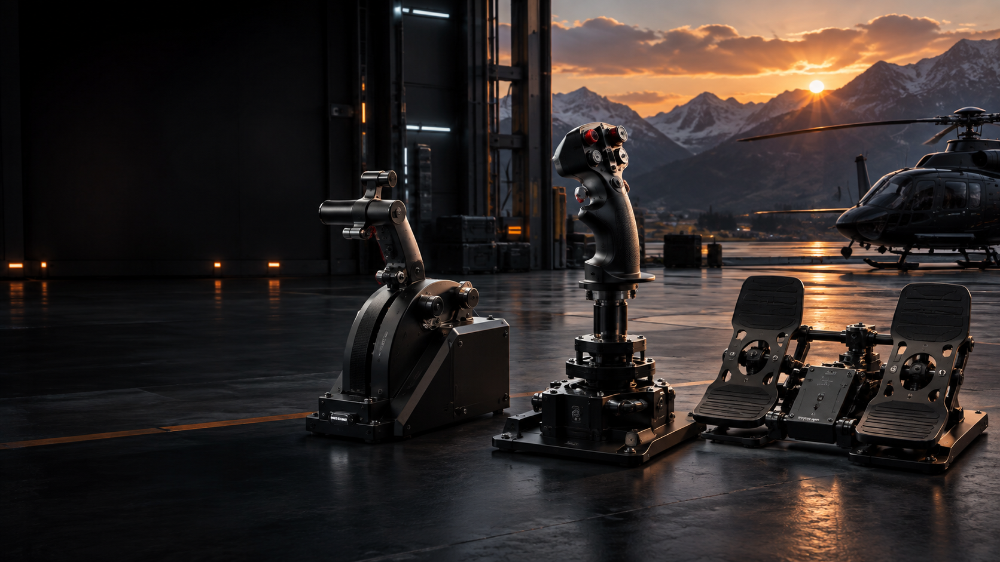
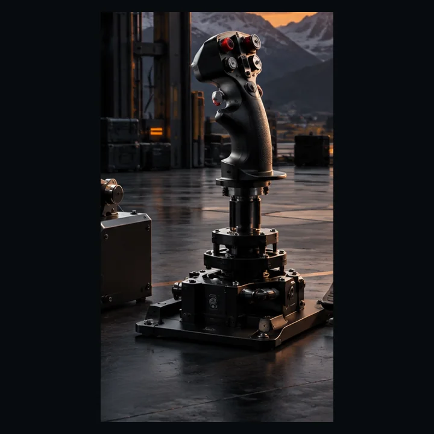
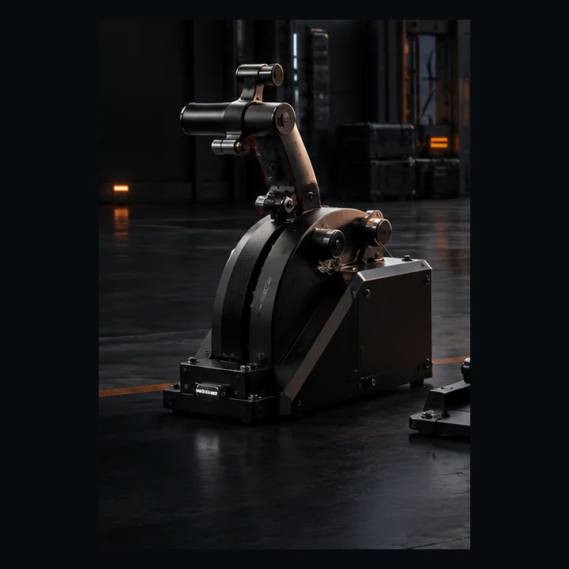
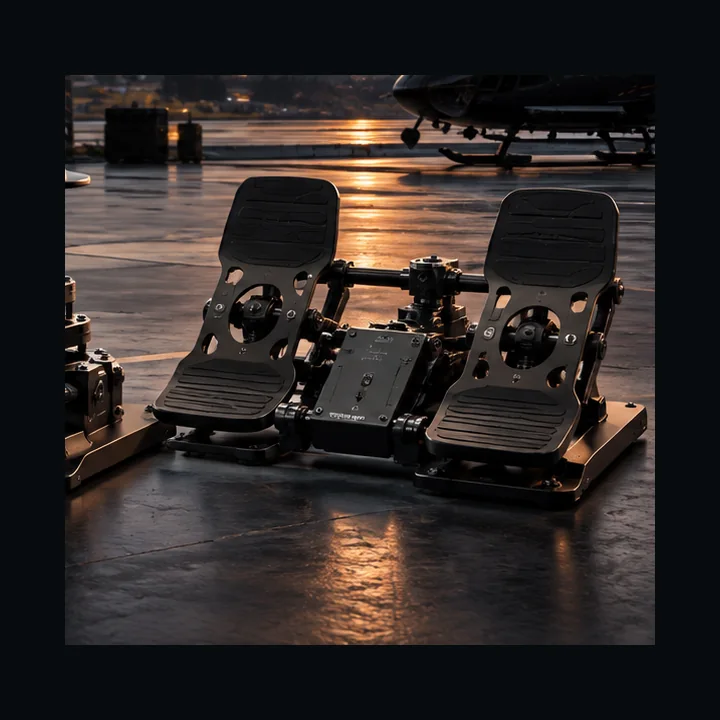

◎
7 Analog AxesKontaktlose Kontrolle
Ein vollständiges Helicopter-Control-System für anspruchsvolle Simulatorpiloten. Cyclic, Collective, Anti-Torque-Pedale und Toe Brakes. Modular. Präzise. Open Source.

Jede Baugruppe ist eigenständig, gemeinsam entsteht ein vollständiges Helicopter-Control-System — entwickelt für mehr Immersion und kontrollierbare Präzision.

Pitch und Roll über einen gelagerten Doppelgimbal mit Stahlachsen und Hall-Sensorik.
Mehr erfahren →
Collective-Pitch plus Twist-Throttle mit einstellbarer Reibung und modularer Mechanik.
Mehr erfahren →
Anti-Torque-Yaw plus getrennte linke und rechte Toe Brake für saubere Ground-Control.
Mehr erfahren →Die Architektur setzt auf kontaktlose Sensorik, nachvollziehbare Elektronik und wartbare Module. Keine Marketingmagie — sondern eine klare Signalkette vom Magneten bis zum Simulator.
Kontaktlose Positionsmessung auf allen sieben analogen Achsen.
Min, Center, Max, Deadzone, Filter, Expo und Invertierung.
Live-Rohwerte, Status, Kalibrierung und Debugging.
Sensorhalter, Griffe und Mechanik bleiben austauschbar.
Keine proprietäre Treiberschicht notwendig.
Gedruckte Struktur, Stahlachsen und Lager an den kritischen Stellen.
Standard USB HID macht das System unabhängig von einer proprietären Simulator-App.
Wir unterscheiden klar zwischen automatisiert geprüfter Entwicklung und physischer Freigabe.
Nein. V1.1 ist aktuell ein Engineering Build und RC2-Kandidat. Die physische Gesamtvalidierung steht noch aus.
Die Position wird magnetisch und kontaktlos erfasst. Dadurch gibt es keinen klassischen Potentiometer-Schleifkontakt.
Ja. CAD, Firmware und Dokumentation sind offen und ausdrücklich auf Anpassbarkeit ausgelegt.
Primär MSFS und X-Plane; durch Standard USB HID sind weitere kompatible Simulatoren möglich.
135er Heli Control ist Open Source — entwickelt für eine Community, die Helicopter-Simulation besser machen will.